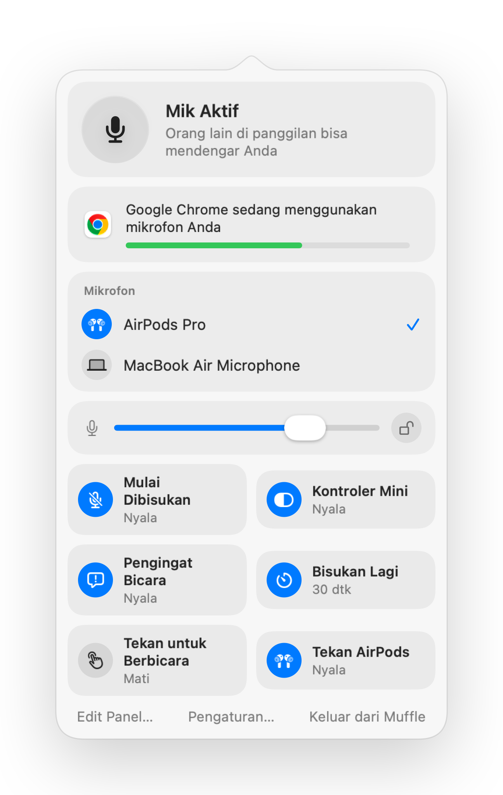

Cara membisukan panggilan di tab browser mana pun di Mac
Makin banyak panggilan berjalan di browser: Google Meet, Teams di web, kantor virtual seperti SoWork dan Gather, Whereby, Jitsi. Masing-masing memiliki tombol dan pintasan bisukan sendiri, dan itu hanya berfungsi saat tab tersebut berada di depan.
Browser juga mengabaikan tekanan bisukan AirPods di Mac. Muffle menerima tekanan tersebut, atau satu pintasan global, lalu membisukan mikrofon untuk setiap tab sekaligus.
Bisukan panggilan web apa pun
- 1
Instal Muffle dan izinkan akses mikrofon.
- 2
Buka panggilan Anda di tab browser mana pun.
- 3
Tekan batang AirPods Anda atau Control-Option-M untuk membisukan, dari app atau tab mana pun.
- 4
Perhatikan ikon bilah menu: merah berarti mik mati.

- Kantor virtual membiarkan mik Anda aktif selama berjam-jam. Nyalakan kontroler mini mengambang untuk selalu melihat status Anda.
- Pengingat “Anda dibisukan” memberi tahu Anda saat Anda mulai berbicara ketika dibisukan.
Pertanyaan umum
Mengapa menekan AirPods tidak berfungsi di Chrome?
Chrome tidak mendukung gerakan bisukan AirPods macOS untuk halaman web. Muffle menerima tekanan tersebut dan membisukan mik itu sendiri.
Apakah ini berfungsi di SoWork dan Gather?
Ya. Situs web apa pun yang menggunakan mikrofon Anda akan dibisukan saat Muffle mematikan mik.